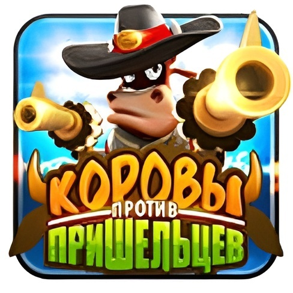

10 сентября 2014 Belka Games выпустила игру в вк, Одноклассники, а так же Facebook Cower Defense, она же Cower Defense. Как бы это не звучало, но игра собрала своих фанатов. Почти любое ведро, хотя бы на Windows XP тянуло эту игру. Так ну собрали денег с внутриигровых покупок и что дальше? В конце 2018 закралась Cower Defense. Около 2-3 миллиона аккаунтов - всё. Отмазки типо "Ну значит игра было не очень успешной" НЕ РАБОТАЮТ. Игра была нап слуху. И тут парочка людишек 4-5 января основали Manul Games....